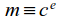
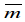
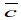
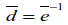

. Чтобы расшифровать m, адресат должен возвести m в d-ю степень по модулю n – это простая задача. Для возведения в степень удобно использовать двоичное представление числа d и рекурсивный алгоритм.
. Чтобы расшифровать m, адресат должен возвести m в d-ю степень по модулю n – это простая задача. Для возведения в степень удобно использовать двоичное представление числа d и рекурсивный алгоритм.
Определение 3.8.1. Секретность данных – свойство данных быть известными и доступными только той группе субъектов, для кого они предназначены. Криптографическая защита – это защита информационных процессов от целенаправленных попыток отклонить их от нормальных условий протекания, базирующаяся на криптографических преобразованиях данных. Имитозащитой называется защита от навязывания ложной информации. Имитозащита достигается обычно за счет включения в пакет передаваемых данных имитовставки – блока информации, зависящего от ключа и данных. Криптографическим алгоритмом называется алгоритм преобразования данных, являющийся полностью или частично секретным либо использующий при работе набор секретных параметров. Дополнительно к криптографическим алгоритмам относят алгоритмы, не использующие секретные параметры, но применяющиеся в единой технологической цепочке с криптографическими алгоритмами. Криптографический протокол – набор правил, регламентирующих использование криптографических преобразований и алгоритмов в информационных процессах.
Определение 3.8.2. Криптографическая система представляет собой набор обратимых криптографических преобразований, или алгоритмов, предназначенных для работы в единой технологической цепочке с целью решения определенной задачи защиты информационного процесса. Криптопакет – конкретная программная реализация криптосистемы. Секретность – свойство криптосистемы обеспечивать секретность защищаемых данных.
Криптосистема выполняет три основные функции: усиление защищенности данных, облегчение работы с криптоалгоритмами со стороны человека и обеспечение совместимости потока данных с другим программным обеспечением. К основным причинам ненадежности криптосистем следует отнести невозможность применения абсолютно стойких криптоалгоритмов (алгоритм шифрования считается стойким до тех пор, пока не будет доказано обратное), ошибки в реализации и неправильное применение криптоалгоритмов, человеческий фактор.
Новейшие методы защиты информации от несанкционированного доступа называют групповыми, т. к. они базируются на теории групп. Ярким примером тому является криптосистема RSA, предложенная в 1977 г. исследователями Массачусетского технологического института (США) и получившая название в честь ее создателей (по первым буквам их фамилий). Ими являются Рональд Ривест (род. в 1947 г.) – американский специалист по криптографии, Ади Шамир (род. в 1952 г.) – израильский ученый в области теории вычислительных систем, и Леонард Адлеман (род. в 1945 г.) – американский ученый-теоретик в области компьютерных наук.
Суть криптосистемы RSA заключается в следующем. Находятся два больших простых числа p и q. Вычисляется n = pq. Тогда φ(n)=(p-1)(q-1), где φ – функция Эйлера. Фиксируется натуральное число e с условиями e < φ(n) и НОД(e, φ(n)) = 1. Пара (e, n) называется открытым ключом. Передаваемая информация шифруется в виде натурального числа c-сообщения, где c < n и НОД (c, n) = 1. Тогда – обратимый класс в Z/nZ, т. е. элемент абелевой мультипликативной группы Z/nZ* порядка φ(n). Сообщение c шифруется и передается числом (mod n), т. е.  – e-я степень  в Z/nZ. Согласно теореме 3.7.7 возведение в e-ю степень является автоморфизмом группы (Z/nZ*, ).
Адресат получает сообщение m, знает n и e. Он должен также знать секретный ключ – такое натуральное число d, что d < φ(n) и (mod φ(n)). Значит, ed=φ(n)k+1 для некоторого натурального числа k. Тогда в Z/nZ согласно следствию 2 из теоремы 3.4.2 Лагранжа имеем следующее равенство: . Чтобы расшифровать m, адресат должен возвести m в d-ю степень по модулю n – это простая задача. Для возведения в степень удобно использовать двоичное представление числа d и рекурсивный алгоритм.
Криптоаналитик для расшифровки сообщения m должен разложить n на множители p и q. Тогда вычисляется φ(n) и d легко находится по значению e из открытого ключа:  в Z/φ(n)Z. Именно факторизация n (разложение на простые множители) и составляет основную сложность. На настоящий момент неизвестны полиномиальные алгоритмы факторизации натуральных чисел, хотя и не доказано, что таких алгоритмов не существует. Здесь речь идет о полиномиальной зависимости времени работы алгоритма от логарифма проверяемого числа, т. е. от количества его цифр. Только в 2002 г. было конструктивно доказано, что задача проверки натурального числа на простоту в общем виде полиномиально разрешима. Таким образом, поиск эффективного метода факторизации чисел оказался более сложной алгоритмической проблемой. На предполагаемой вычислительной сложности задачи факторизации и базируется стойкость криптосистемы RSA.
Размер ключа в алгоритме RSA связан с размером модуля n. Два числа p и q, произведением которых является модуль, должны иметь приблизительно одинаковую длину, поскольку в этом случае найти сомножители сложнее, чем в случае, когда длина чисел значительно различается. Если числа p и q чрезвычайно близки друг к другу или их разность близка к некоторому предопределенному значению, то возникает потенциальная угроза безопасности. Оптимальный размер модуля n определяется требованиями безопасности: модуль большего размера обеспечивает большую безопасность, но и замедляет работу алгоритма RSA. В настоящее время Лаборатория RSA рекомендует для обычных задач ключи размером 1024 бита, а для особо важных задач – 2048 битов.
Чтобы продемонстрировать стойкость своей криптосистемы, изобретатели зашифровали фразу на английском языке, содержащую оксюморон – сочетание слов с противоположным значением: «The magic words are squeamish ossifrage». Что можно перевести так: «Волшебные слова – привередливый бородач» (английское слово «ossifrage» – устаревшее название бородача, или ягнятника, – птицы семейства ястребиных, известной своей неприхотливостью и образом жизни в суровых условиях). В качестве n выступало 129-значное число и в качестве e – 4-значное число, сообщение m было 128-значным числом. Американский математик, писатель, популяризатор науки и всемирно известный специалист по математическим головоломкам Мартин Гарднер (1914–2010) опубликовал этот криптотекст в журнале «Scientific American» в августе 1977 г., компанией «RSA Data Security» была назначена награда в 100 долларов тому, кто расшифрует текст. В русском переводе заглавие статьи Гарднера звучит так: «Новый вид шифра, для взлома которого потребуются миллионы лет». Именно эта статья сыграла важнейшую роль в распространении информации об RSA, привлекла к криптографии внимание широких кругов неспециалистов и фактически способствовала бурному прогрессу этой области, произошедшему в последовавшие 20 лет.
Текст был расшифрован лишь в апреле 1994 г. В течение шести месяцев были задействованы ресурсы 1600 компьютеров более 20 стран (соединенных через сеть Интернет). Организаторы вычислений использовали суперкомпьютер – MasPar. Данные были занесены в 0–1 матрицу из 188346 строк и 188146 столбцов. Файл с этой матрицей превосходил 4 Гбайта, причем каждый бит был существенным. 129-значное число n было разложено на 64- и 65-значные множители p и q. Полученное за расшифровку символическое денежное вознаграждение было пожаловано координаторами вычислительного проекта, одним из которых был известный современный голландский математик и криптоаналитик Арьен Ленстра (род. в 1956 г.), корпорации «The Free Software Foundation».
Определение 3.8.3. Симметричным называется шифр, использующий для зашифровывания и расшифровывания либо один и тот же ключ, либо формально различные ключи, допускающие простое преобразование одного в другой. Преобразование шифрования может быть симметричным или асимметричным (односторонним) относительно преобразования расшифровывания. Это важное свойство функции преобразования определяет два класса криптосистем: 1) симметричные (или одноключевые), 2) асимметричные (или двухключевые, иначе криптосистемы с открытым ключом). Симметричной называется криптосистема, реализующая алгоритмы шифрования (симметричные шифры), выполняемые с использованием одного набора параметров – одного ключа. Асимметричной называется криптосистема, содержащая преобразования (алгоритмы), наборы параметров которых различны и таковы, что по одному из них вычислительно невозможно определить другие параметры. Таким образом, в симметричной криптосистеме секретный ключ передают отправителю и получателю по защищенному каналу распространения ключей, например, такому, как курьерская служба. В асимметричной же криптосистеме по незащищенному каналу передают только открытый ключ, а секретный сохраняют на месте его генерации. Криптография с секретным ключом (или одноключевая, традиционная криптография) – раздел криптографии, исследующий и разрабатывающий симметричные криптографические системы. Криптография с открытым ключом (или двухключевая, современная криптография) – раздел криптографии, изучающий и разрабатывающий асимметричные криптографические системы.
Примерами известных симметричных алгоритмов шифрования являются DES (англ. Data Encryption Standard), ГОСТ 28147-89, IDEA (англ. International Data Encryption Algorithm), Blowfish, Twofish, CAST, AES (англ. Advanced Encryption Standard), или Rijndael, а асимметричных алгоритмов – RSA и El-Gamal (алгоритм Тахера Эль-Гамаля (род. в 1955 г.), египетского ученого в области криптографии). Во многих странах приняты национальные стандарты шифрования. Так, ГОСТ 28147-89 – стандарт Российской Федерации на шифрование и имитозащиту данных – стал в 1990 г. официальным стандартом СССР, а позже, после распада СССР, федеральным стандартом Российской Федерации и также стандартом СНГ. DES – федеральный стандарт шифрования США в 1977–2001 гг. AES в настоящее время (с 2002 г.) является федеральным стандартом шифрования США.
Главным достоинством криптосистем с открытым ключом является их потенциально высокая безопасность: нет необходимости ни передавать, ни сообщать значения секретных ключей, ни убеждаться в их подлинности. В симметричных криптосистемах существует опасность раскрытия секретного ключа во время передачи. Однако алгоритмы, лежащие в основе криптосистем с открытым ключом, имеют следующие недостатки:
- генерация новых секретных и открытых ключей основана на генерации новых больших простых чисел, а проверка простоты чисел занимает много процессорного времени;
- процедуры шифрования и расшифровывания, связанные с возведением в степень многозначного числа, достаточно громоздки.
Поэтому быстродействие криптосистем с открытым ключом обычно в сотни и более раз меньше быстродействия симметричных криптосистем с секретным ключом.
Комбинированный (гибридный) метод шифрования позволяет сочетать преимущества высокой секретности, предоставляемые асимметричными криптосистемами с открытым ключом, с преимуществами высокой скорости работы, присущими симметричным криптосистемам с секретным ключом. При таком подходе криптосистема с открытым ключом применяется для шифрования, передачи и последующего расшифровывания только секретного ключа симметричной криптосистемы. А симметричная криптосистема применяется для шифрования и передачи исходного открытого текста. В результате криптосистема с открытым ключом не заменяет симметричную криптосистему с секретным ключом, а лишь дополняет ее, позволяя повысить в целом защищенность передаваемой информации.
Криптографический алгоритм RSA является наиболее широко распространенным в мире асимметричным алгоритмом шифрования. Криптосистема RSA используется в самых различных продуктах, на различных платформах и во многих отраслях. В настоящее время криптосистема RSA встраивается во многие коммерческие продукты, число которых постоянно увеличивается. Также ее используют операционные системы Microsoft, Apple, Sun и Novell. В аппаратном исполнении RSA-алгоритм применяется в защищенных телефонах, на сетевых платах Ethernet, на смарт-картах, широко используется в криптографическом оборудовании. Кроме того, алгоритм входит в состав всех основных протоколов для защищенных коммуникаций Интернета, в том числе IPsec (англ. Internet Protocol Security), S/MIME, SSL, TLS, S/WAN, а также в стандарт PKCS, применяемый в важных приложениях. Также RSA используется во многих учреждениях, например, в правительственных службах, в большинстве корпораций, в государственных лабораториях и университетах. На осень 2000 г. технологии с применением алгоритма RSA были лицензированы более чем 700 компаниями. Программное обеспечение RSA BSAFE используют многие ведущие компании, включая Adobe, Oracle, Hypercom, Skyworks, Sony и Nintendo, и более 1 млрд. пользователей всего мира, и это количество имеет явную тенденцию к увеличению по мере роста Интернета.
Определение 3.8.4. Электронная цифровая подпись (ЭЦП) – последовательность символов, полученная в результате криптографического преобразования электронных данных, которая добавляется к блоку данных и позволяет получателю блока проверить источник и целостность данных и защититься от подделки. ЭЦП используется в качестве аналога обычной подписи, которая устанавливает подлинность какого-либо документа или договора с использованием электронных и компьютерных средств.
Системы ЭЦП являются разделом криптографии. Первые варианты цифровой подписи были реализованы с помощью симметричных криптосистем. Современные процедуры создания и проверки ЭЦП основаны на шифровании с открытым ключом. Технология применения системы ЭЦП предполагает наличие сети абонентов, посылающих друг другу подписанные электронные документы. Для каждого абонента генерируется пара ключей: секретный и открытый. Секретный ключ хранится абонентом в тайне и используется им для формирования ЭЦП. Открытый ключ известен всем другим пользователям и предназначен для проверки ЭЦП получателем подписанного электронного документа. Иначе говоря, открытый ключ является необходимым инструментом, позволяющим проверить подлинность электронного документа и автора подписи. Открытый ключ не позволяет вычислить секретный ключ.
Для генерации пары ключей (секретного и открытого) в алгоритмах ЭЦП используются разные математические схемы, основанные на применении односторонних функций. Эти схемы разделяются на две группы. В основе такого разделения лежат обеспечивающие стойкость алгоритмов известные сложные вычислительные задачи: задача факторизации больших чисел и задача дискретного логарифмирования (восстановления показателя по известному основанию и его степени с использованием модульной арифметики). Первой и наиболее известной во всем мире конкретной системой ЭЦП стала система RSA. Более надежный и удобный для реализации на персональных компьютерах ЭЦП алгоритм был разработан в 1984 г. Тахером Эль-Гамалем и получил название EGSA (англ. El-Gamal Signature Algorithm). Идея EGSA основана на том, что для обоснования практической невозможности фальсификации ЭЦП может быть использована более сложная вычислительная задача, чем факторизация большого числа, – задача дискретного логарифмирования в простом поле (Z/pZ, +, ), где p – большое простое число. Кроме того, Эль-Гамалю удалось избежать явной слабости алгоритма ЭЦП RSA, связанной с возможностью подделки ЭЦП под некоторыми сообщениями без определения секретного ключа.
Развитием алгоритма EGSA стали DSA (англ. Digital Signature Algorithm), предложенный в 1991 г. в США для использования в федеральном стандарте цифровой подписи DSS (англ. Digital Signature Standard), введенном в 1994 г., и алгоритмы цифровой подписи, определенные российским стандартом в 1995–2001 гг. ГОСТ Р 34.10-94 и стандартом Республики Беларусь в 2000–2013 гг. СТБ 1176.2-99. Алгоритмы цифровых подписей ECDSA (англ. Elliptic Curve Digital Signature Algorithm), ГОСТ Р 34.10-2001 (стандарт цифровой подписи в Российской Федерации в 2002–2012 гг.), ГОСТ Р 34.10-2012 (новый стандарт цифровой подписи в Российской Федерации с 2013 г.) и СТБ 34.101.45-2013 (новый стандарт цифровой подписи в Республике Беларусь с 2014 г.) являются усовершенствованиями алгоритмов цифровых подписей DSA, ГОСТ Р 34.10-94 и СТБ 1176.2-99 соответственно и по сравнению с последними обладают большей стойкостью, основанной на сложности решения задачи дискретного логарифмирования в группе точек эллиптической кривой над конечным полем.
Недостатки защищенной аутентификации (установления подлинности) были главным препятствием для замены бумажного документооборота электронным; почти везде контракты, чеки, официальные письма, юридические документы все еще выполняются на бумаге. Именно это – необходимость элементов бумажного документооборота – не позволяло полностью перейти к электронным транзакциям. Алгоритм RSA имеет большое значение, т. к. может использоваться как для шифрования с открытым ключом, так и для создания электронной цифровой подписи. Предлагаемая RSA цифровая подпись – инструмент, который позволит перевести наиболее существенные бумажные документопотоки в электронно-цифровой вид. Благодаря цифровым подписям многие документы – паспорта, избирательные бюллетени, завещания, договора аренды – теперь смогут существовать в электронной форме, а любая бумажная версия будет в этом случае только копией электронного оригинала. Все это стало возможным благодаря стандарту цифровых подписей RSA.
Единая система открытого ключа (англ. public key) допускает обмен документами с ЭЦП между пользователями из разных государств, использующими различное программное обеспечение на различных платформах; такая возможность насущно необходима для развития электронной коммерции. Распространение системы RSA настолько велико, что ее учитывают при создании новых стандартов и зачастую называют стандартом де-факто. Вне зависимости от официальных стандартов существование такого стандарта чрезвычайно важно для развития электронной коммерции и вообще экономики. Множество разрабатываемых в настоящее время стандартов включают в себя либо сам алгоритм RSA или его поддержку, либо рекомендуют криптосистему RSA для обеспечения секретности и/или аутентификации. Например, использование алгоритма RSA рекомендовано следующими международными и национальными стандартами: ITU-T X.509, ISO/IEC 9796-2:2010, IEEE Std 1363-2000 и IEEE Std 1363а-2004, WAP WTLS. Криптосистема RSA является частью стандартов банковских систем SWIFT, ANSI X9.31 и ANSI X9.44. Австралийский стандарт управления ключами AS 2805.6.5.3 также включает систему RSA. В Республике Беларусь существует стандарт СТБ 34.101.22-2009 «Информационные технологии. Криптография на основе алгоритма RSA».